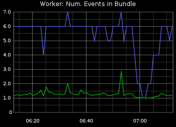
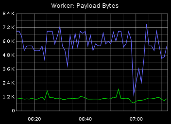
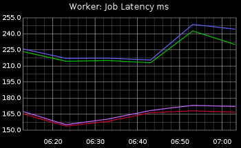
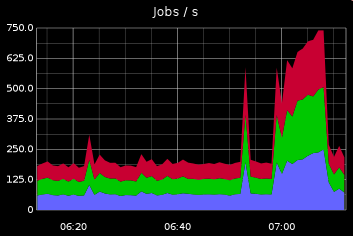
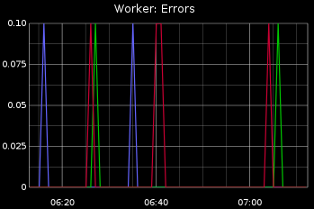
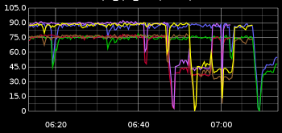
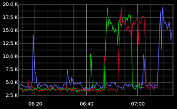
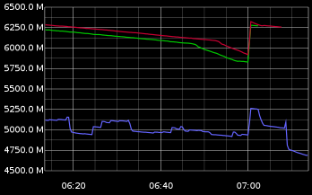
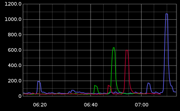

Monitoring Sneakers
 Dotan Nahum, Dec 9
Dotan Nahum, Dec 9
I'll show one of my production Sneakers deployment and the some of tiers I've chosen for monitoring it.
Monitoring Message Handling
In this specific use case, each "bundle" may contain several "events", which is a simple bulking technique. Here we're averaging and counting the number of events per bundle.
In itself an important metric to measure, to expose a bad / error prone bulking strategy.

A good practice is to always measure the average payload size - the size of a message passed to a worker. Again this is a kind of parameter that may affect job handling time and may expose misconfiguration / errors with original messages.
The size of a message and rate of messages are also useful in computing and monitoring the network capacity and saturation.

Monitoring Worker Metrics
A job's latency is very important. Here you can measure and learn about the profile of your work. With this information you can decide how to scale up / down your workers.
This metric along with the CPU's state will help you answer questions such as are jobs I/O bound? are they CPU bound?

Job/sec is the ultimate eyecandy metric; Beyond that, it is also a very useful tool to base any anomaly / spike detection on with your jobs. It's also one of the metrics that you should always find changing - seasonality, peaks, spikes, etc.

Worker errors are errors that aren't handled by any of your code. Very useful for a baseline for monitoring.

Monitoring RabbitMQ
A great set of practices for Monitoring RabbitMQ is the same set for most queue brokers.
Here's a few ideas to get you running:
- A queue with no activity (no push, no drain) is a bad queue.
- A queue should always have traffic in + traffic out.
- A queue should have a LWA (Low-watermark-alert), and HWA (High-watermark-alert). Set your own based on your learnt real-world metrics.
- A queue should always be draining. A queue's level should not be monotonically increasing forever (or a given acceptable time-window).
Monitoring Server Vitals
When you're trying to troubleshoot a sneaky problem, server vitals can increase the resolution and usually would provide an answer to your problems.
Starting off with CPU, obviously. This is cpu-idle:

Many threads, many processes generate a lot of contention and context switches. You want to be able to visualize the bottlenecks.

Ruby processes may become notoriously memory-hungry. This is real free memory:

If your worker interacts with the world, it's useful to monitor the amount of open connections. Open connections run out quickly on a high-scale solution. This is open connections:

Conclusion
There's no such thing as too much metrics (actually there is, but let's pretend there isn't). Once you bump into a hard problem in the field of background processing, the nature of it being async makes the problem very illusive.
You have to have some kind of historical viewport where you can examine and cross-reference several worker-level, job-level, and hardware-level metrics.